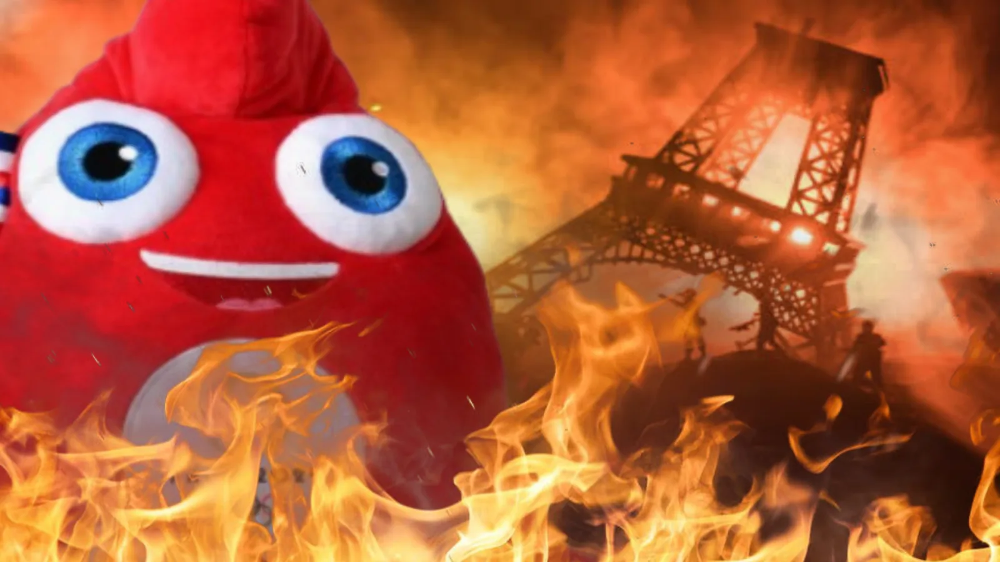
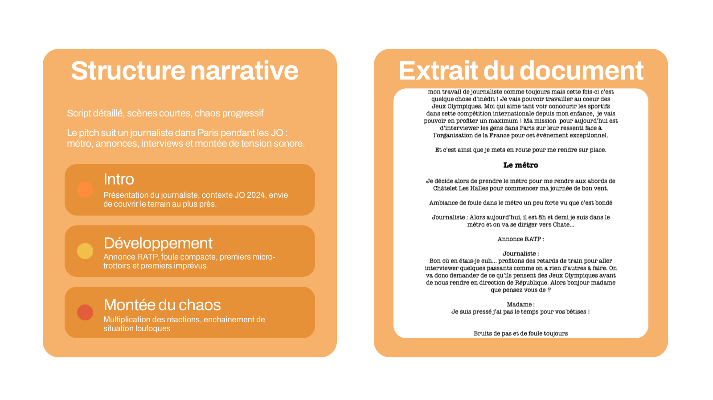
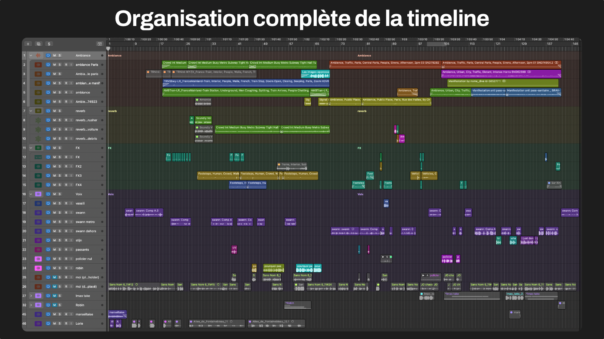

Audio fiction - Olympics chaos in Paris
A short-form narrative audio fiction piece, written and produced in the spirit of Arte Radio around a tense Paris during the 2024 Olympics.

Project summary
This audio fiction project was produced as part of the Studio M program. The subject explores the atmosphere of the Paris 2024 Olympic Games through a narrative point of view: a journalist moves through the city and captures the tensions of daily life.
The final result was presented orally with a justification of the narrative, technical and aesthetic choices. The goal was to create a clear and immersive listening experience for any listener without relying on visual support.
Full listening
The final version of the project is available below.
Note: The audio below is in French. No English transcript yet.
Full version · 4 min 50
Narrative audio fiction produced as part of the project. Audio in French.
Educational brief
The brief required producing a podcast aligned with Arte Radio’s editorial line, with the following constraints:
- Length between 2 and 5 minutes
- Voice presence required, whether interview, voice-over or dialogue
- Balance between voice, music and sound design
- A project that could not rely on music alone
- Traceability of archive sounds in a dedicated document
- Flexible final format, mono, stereo, binaural and so on

From pitch to structure: narrative flow, atmospheres and a gradual rise in chaos.
Intentions & writing
The pitch is built on a fiction anchored in urban reality: crowds, transport, social tension and saturation of public space. The narration follows a journalist moving through Paris, with a sequence of short scenes to keep the rhythm clear and immersive.
The goal was to make the chaos felt through sound staging, without overloading the text and while keeping the narration understandable. Some more burlesque scenes also contribute to the identity of the piece and to the way this urban tension is told.
Listening structure
The narration was designed as short micro-sequences, alternating between voice, ambience and breathing space to maintain attention without losing the clarity of the main thread. Each scene had to deepen the sense of chaos without drowning the listener in information.
- Quick introduction to place the scene immediately
- Alternation between voice and atmosphere to relaunch attention
- Progression through short sequences to preserve a clear rhythm
- Scene exits designed to conclude without abrupt breaks
Voice production
I handled the recording of every voice involved in the project, then edited the takes to preserve natural diction, consistent levels and strong intelligibility in the final mix.
- Scheduling recording sessions with amateur voice performers
- Directing performance intentions according to each scene
- Selecting and cleaning the strongest takes
One major challenge of the project was working with several non-professional voices in a coherent way. I had to organize availability, explain the expected intention precisely, guide performances during recording and redo some lines until the tone felt accurate and usable in the edit.

An edit organized by atmospheres, effects and voices to keep the fiction easy to follow.
Editing, mix & sound design
The edit was built to clearly articulate narration, crowd ambiences, transport sounds and breathing moments between sequences. The mix prioritized voice intelligibility while keeping a realistic atmosphere.
- Timeline structuring by scenes
- Voice treatment with levels, balance and clarity
- Integration of ambiences and transition effects
- Balance between sonic realism and listening comfort
- Final mastering for clean web playback
The sound design was not there just to decorate the project: it carried part of the narrative. Transport, crowds and urban tensions had to let the situation be felt even before everything was explicitly stated by the text.
Archive sources & compliance
In line with the brief, every archive sound used in the project was documented in a source file.
Difficulties & tradeoffs
- Keep the narration clear despite a high density of sound
- Balance voice, music and sound design without masking information
- Make the world feel credible with properly integrated ambience and archive sounds
- Get coherent takes with amateur voice actors despite uneven performance levels
The main tradeoff was making the tension felt without saturating the listening experience. The chaos had to read as a staging choice, not as confusion in the edit.
Result & learnings
- Audio fiction finalized within the expected duration range
- Understandable narration with continuous voice presence
- Stronger skills in voice direction and narrative editing
- A full working method covering pitch, production, documentation and oral presentation
What this project helped me develop
- Ability to write and stage a short but structured sound narrative
- Ability to direct voices and build intelligible listening without visual support
- Control of the link between narration, sound design and mix readability
- Ability to defend aesthetic and technical choices in a presentation context